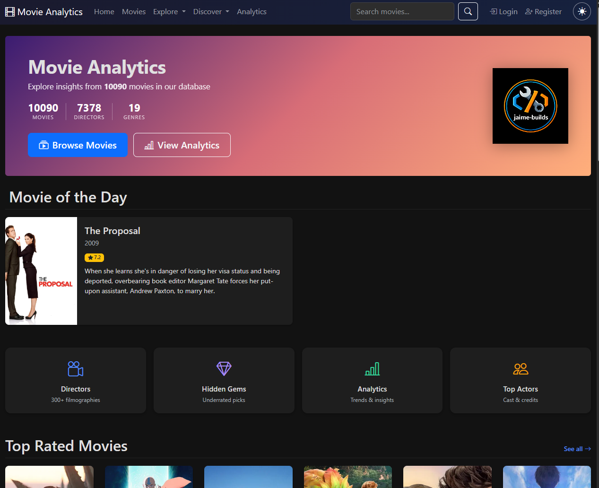
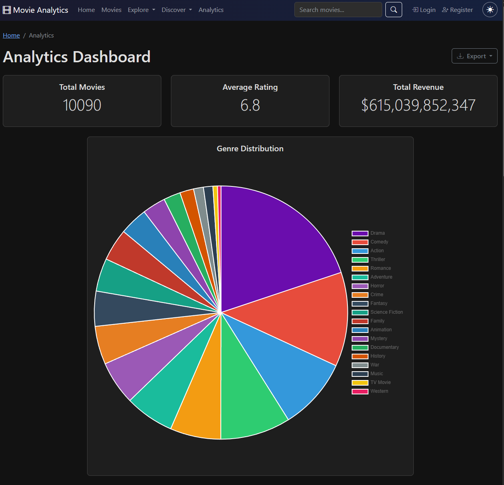
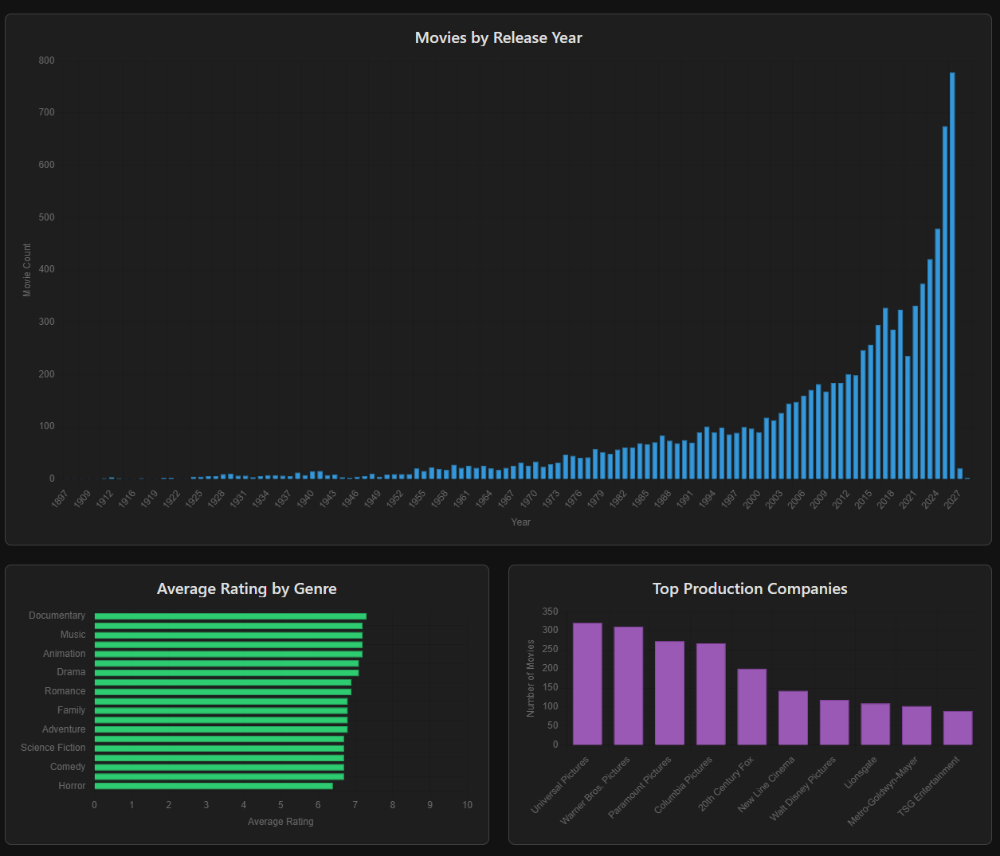
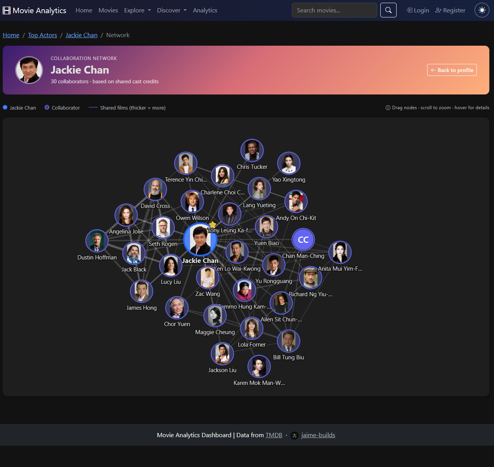

🎬 Movie Analytics Dashboard
Full-stack movie discovery platform · Python · Flask · PostgreSQL
Why I built it
I wanted to learn. That's the real reason this project exists. I wanted to pick up some coding, understand how databases and APIs connect, get more hands-on with AI tools, and learn a bit of frontend design. Movies were the natural subject. I've always loved watching films, reading about their production and box office numbers, and following the actors and directors behind them. Building a movie dashboard let me learn the things I wanted to learn while working on something I already cared about.
What it is
Movie Analytics Dashboard is a full-stack movie discovery platform. It pulls data from The Movie Database (TMDB) API and stores it locally: 10,090 movies, 7,378 directors, and 19 genres as of the last count. Users can create accounts, build favorites and watchlists, rate and review movies, and organize films into named collections.

The analytics side is where most of the SQL work lives. Six Chart.js visualizations break the library down by genre, release timeline, ratings, and budget versus revenue, including a scatter plot with a break-even line and a most-profitable-movies chart. Hidden Gems runs a small scoring formula against every movie in the database:
gem_score = vote_average / (log(popularity + 2) * 2)The idea is to surface well-rated movies nobody's heard of, filtered to a vote average of 7.0 or higher, popularity capped at 20, and at least 50 votes so a single 10/10 rating from three people doesn't sneak in. That same pool feeds the homepage's Movie of the Day, more on that below.


The actor collaboration network is the feature I'm proudest of visually. It's a D3.js force-directed graph built from any actor's page: the actor sits at the center, up to 30 collaborators orbit around them with their TMDB profile photos attached, and the connecting lines are weighted by how many films they've shared. Hovering an edge shows the actual movie titles. Dragging a node pins it in place. It's the one page where the data actually looks alive instead of sitting in a table.

The whole thing runs on Python and Flask, backed by PostgreSQL, with 18 database tables and 66 routes across 32 pages, 21 actions, and 13 API endpoints. The test suite has 463 passing tests and sat at 86% coverage as of the last measurement. It runs in Docker on my home server behind a Cloudflare Tunnel, with no ports opened to the internet.
The stack, and why
Python and Flask. I was learning Python through Boot.dev while building this, and I already knew a little going in. Flask kept the framework itself out of the way so I could focus on learning the actual concepts: routes, database queries, API calls.
SQLAlchemy and Alembic. SQLAlchemy paired naturally with Flask and gave me an easier on-ramp into database concepts than writing raw SQL from day one. Alembic came with it as the standard way to change a schema without wiping the data every time.
SQLite, then PostgreSQL. I started on SQLite because I already knew it and it needed zero setup. I knew going in it had limits. As I got more comfortable with Postgres, and after running into a couple of database lockup issues while developing, I decided to switch before going live rather than find out about Postgres's stricter rules for the first time in production.
Chart.js and D3. This was my first time working with any charting library, so Chart.js was the straightforward choice for the standard bar and line charts on the analytics pages. D3 stepped in for one specific job Chart.js doesn't do: the actor collaboration network page needed a force-directed graph.
Bootstrap 5. The fastest way to a decent-looking UI without hand-rolling CSS, which meant I could spend my learning time on the backend and database side instead of frontend from scratch.
Docker. I wanted the deployment story to be portable and repeatable, something that would work the same whether it was running on a hosting platform or on my own server later. It's also a real skill worth having on its own.
GitHub Actions. I wanted to treat this like a real project, not a tutorial. That meant pull requests and CI checks that had to pass before anything merged, which is what GitHub Actions runs on every push: tests across three Python versions, linting, and a security scan.
Redis, briefly. Railway's setup pushed toward adding Redis for caching and rate limiting, so I added it. When I moved to self-hosting, I dropped it. The app already fell back cleanly to in-process caching, and running my own Redis instance for a single-user app wasn't worth the extra moving part.
The interesting parts
Moving off Railway
The dashboard started on Railway, a hosting platform that made the first deploy easy: push to main, and it built and shipped on its own. It worked well until I wanted more control and a lower bill, so I migrated the whole thing to my own home server.
That move surfaced a bug that had been invisible the whole time on Railway. Alembic, the migration tool, stores its current schema version in a column that was only 32 characters wide. One of my migration IDs was 36 characters. SQLite never enforces column length, so the mismatch sat there silently for months. The first migration run against real PostgreSQL failed outright and rolled back the entire migration history in one transaction, leaving an empty database instead of a partial one. I fixed it by running the early migrations in a throwaway container, widening the column, then letting the rest catch up.
Two more Postgres-only bugs showed up during the first data sync: a cast column too narrow for some ensemble voice-cast credits, and a handful of deadlocks from running too many sync workers in parallel. Neither was fatal. Postgres just enforces things SQLite lets slide, and I found out the hard way.
Writing tests for the first time
I'd never written a test suite before this project. Getting the first batch to pass green was one of the better moments of the whole build. It wasn't just satisfying, it changed how I thought about the app: what happens when a user isn't logged in, what happens when two requests hit the same row at once, what a broken migration actually does to a live database.
The suite grew with the app and now sits at 463 tests, covering authentication, routes, the API, the database models, and the admin panel. One early mistake taught me the most. My test fixture pointed at the real database instead of an isolated one, so running pytest wiped my actual movie data. I fixed it by switching to an in-memory SQLite database for every test run, then spent 45 minutes re-syncing 8,000 movies to undo the damage. I've never made that mistake twice.
User accounts, ratings, and reviews
Adding user accounts tied to ratings and reviews was new territory too. Showing a page to anyone who visits is easy. The harder part is making sure a user can only edit their own review, that a banned user's session gets cleared even though there's no live session store to clear it from, and that soft-deleted content disappears everywhere it needs to.
Security got the most careful attention here, and it's the subject of its own section below.
The security audit
Once the core features worked, I ran a real audit against my own code rather than assuming a working app is a safe one. It found real problems.
The analytics page was caching the full rendered HTML for an hour, which meant one logged-in user's navbar and username could get served to a completely different visitor for the rest of that hour. The collection-name dropdown built its HTML with string interpolation, which is a straight path to a cross-site scripting bug if a collection name ever contained a script tag. Login redirects trusted whatever next URL was in the query string, which is an open-redirect vulnerability if left unchecked. None of these needed a live attacker to be a real problem, they just needed a normal user typing the wrong thing into a field or clicking the wrong link.
Fixing it took five rounds over about a week:
- Removed the leaky analytics cache and rebuilt the collection dropdown with safe DOM APIs instead of string interpolation. Validated every login redirect against external URLs, protocol-relative links, and backslash tricks.
- Added CSRF protection across every route that changes data, with a shared
csrfFetch()helper so JavaScript POST requests carry the token automatically. Converted/logoutfrom a GET request to a POST, since a GET-triggered logout can be forged from an image tag on another site. - Added missing database indexes on foreign keys that were doing full table scans, and a database-level constraint enforcing one review per user per movie, so the rule can't be bypassed by anything that skips the application layer.
- Fixed a few smaller correctness bugs the audit turned up along the way: director and studio average ratings were counting unrated movies as zero instead of excluding them, which skewed the numbers.
- Hardened the production config: it now refuses to start if the secret key is left at its insecure default, forces
DEBUGoff outside local development, and sets secure cookie flags.
Getting all of this right without a security background meant reading a fair amount about what each vulnerability class actually does, not just applying a fix I didn't understand.
The CI that wasn't running
The CSRF fix above accidentally broke something else, and I didn't notice for weeks.
Before CSRF protection went in, the app initialized its database with a plain Base.metadata.create_all() call. Adding Alembic as the single source of truth for schema changes meant that old code path had to go, so it was changed to raise a RuntimeError if anything tried to call it directly. That was the right call. The problem is the GitHub Actions test workflow still had a leftover step that called it: python -m src.models, the old database-init command, sitting right there in tests.yml.
Every push after that fix broke CI. Not with a confusing failure either. A clean, obvious RuntimeError. It just didn't get looked at, because the two GitHub Actions workflows for this repo are fully independent: tests.yml runs the test suite, and a separate ci.yml builds and pushes the Docker image, with a comment in the file that says testing is handled elsewhere. Nothing stopped the Docker build workflow from going green and deploying while the test workflow sat red in the background. Railway auto-deploys on every push to main regardless of CI status, so for however long that gap lasted, every deploy shipped without a single test actually running against it.
I only caught it by checking the Actions run history directly instead of assuming things were fine because the site was still up. The fix was one line, swap python -m src.models for alembic upgrade head in the workflow file, but the real fix was the habit: don't just look at whether the site loads, look at whether the pipeline that's supposed to protect it actually ran.
Movie of the Day
A small feature with a genuinely fun problem to solve. The homepage shows one featured movie, picked from the Hidden Gems pool, and it needs three things: the same movie for every visitor on a given day, no repeats within 30 days, and no chance of two people getting a different pick if they both load the homepage in the same second.
Python's built-in hash() function is randomized per process, so two different app workers would pick two different "random" movies for the same day. The fix was a SHA-256 hash of the date string instead, which is deterministic and identical across every worker:
import hashlib
def pick_movie_of_the_day(date_str, eligible_movie_ids):
digest = hashlib.sha256(date_str.encode()).hexdigest()
index = int(digest, 16) % len(eligible_movie_ids)
return eligible_movie_ids[index]The eligible pool is Hidden Gems minus whatever's been picked in the last 30 days, sorted by movie ID so the indexing is stable. If two requests both land on the exact same untouched day at the exact same moment, both workers try to insert the same pick into a table with a unique constraint on the date. One wins, the other catches the resulting IntegrityError on that constraint and just reads back the winning row instead of erroring out. It's a small amount of code doing a surprisingly careful job.
Building the admin dashboard
The most recent addition, and the biggest single feature added after the app first went live. Up to this point, moderation meant editing the database directly. The admin panel replaced that with fourteen routes behind a proper is_admin flag: a dashboard home with top-line stats and a live tail of the last 20 warning and error log lines, a users page with search and ban and unban controls, and moderation views for every rating and review, including the ones that have been hidden.
The trickiest part was ban enforcement. There's no server-side session store, sessions are just signed cookies, so there's no clean way to reach into an existing session and kill it. Instead, the check lives in get_current_user(), the one function every authenticated route already calls to figure out who's asking. If that user is banned, the function returns None instead of the user object, clears their session, shows a message, and lets the request continue as if they'd never logged in, all without adding a second database query to every request the way a separate ban-check hook would have.
Soft deletes needed their own thought too. Ratings and reviews get an is_deleted flag instead of being removed outright, so a moderator can restore something they took down by mistake. But the app already enforced one rating and one review per user per movie at the database level, which meant a moderated user could just resubmit their rating and silently overwrite the hidden row, undoing the moderation. That path now returns a clear error instead of allowing the rewrite.
An admin can't ban their own account. It's a small guard, but it's the kind of edge case that's easy to skip until it happens to you at 11pm.
What's next
The roadmap has a mix of small polish and bigger changes. SEO work (meta tags, proper social preview images) and performance monitoring are on the list, along with a user activity feed and letting collections be made public instead of always private. On the data side, the TMDB sync currently uses the popular-movies endpoint, which caps out around 10,000 movies no matter what. Switching to TMDB's full data dump removes that ceiling entirely. Further out: OAuth login, a personal year-in-review stats page, and a proper full-text search instead of the current title/overview matching.
What I'd do differently
I'd spend more time planning up front. A few times during the build I pivoted when I didn't need to, chasing an idea mid-sprint instead of finishing the one I'd already started. The plan was usually right. Sticking to it would have saved some rework.